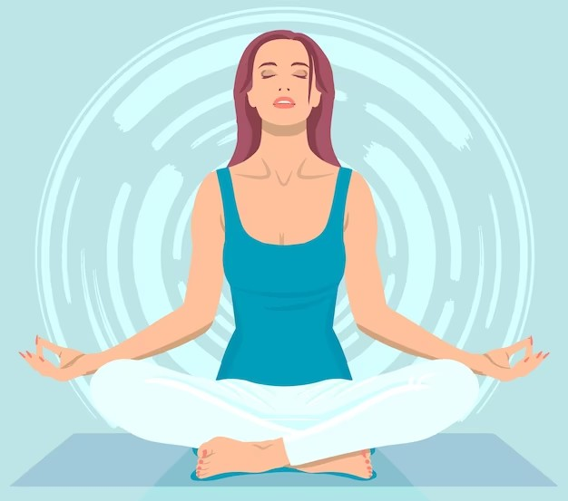

Что такое самогипноз?
Самогипноз - это метод самовнушения, который помогает расслабиться, снять стресс и внести позитивные изменения в свою жизнь. Это инструмент, позволяющий настроить подсознание на достижение целей и укрепление уверенности.
Как работает самогипноз?
Самогипноз работает, создавая состояние расслабления, в котором ваш разум становится более восприимчивым к новым мыслям и убеждениям. Это состояние называют "гипнотическим трансом".
Преимущества самогипноза.
- Снятие стреса и тревоги
- Повышение уверенности в себе
- Избавление от вредных привычек
- Улучшение сна
- Достижение личных целей
Дополнительные ресурсы.
Хотите узнать больше? Посетите эту полезную страницу:
Psychology Today